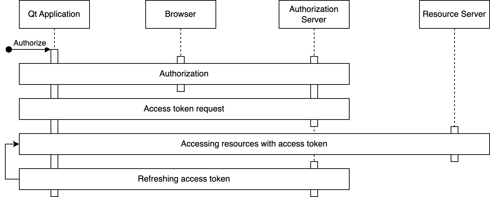
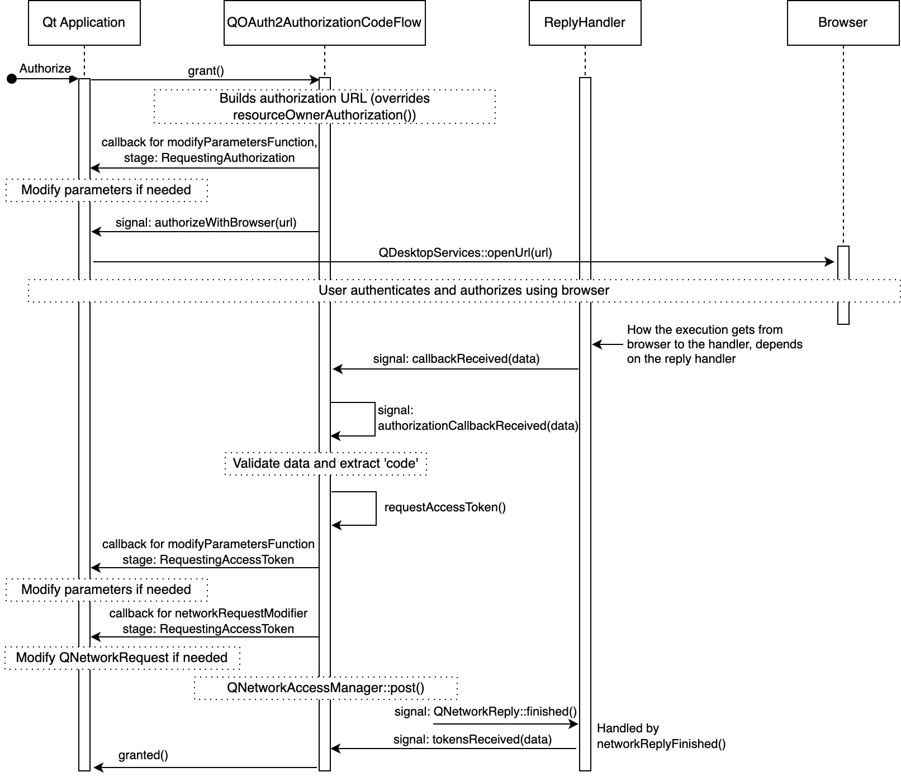
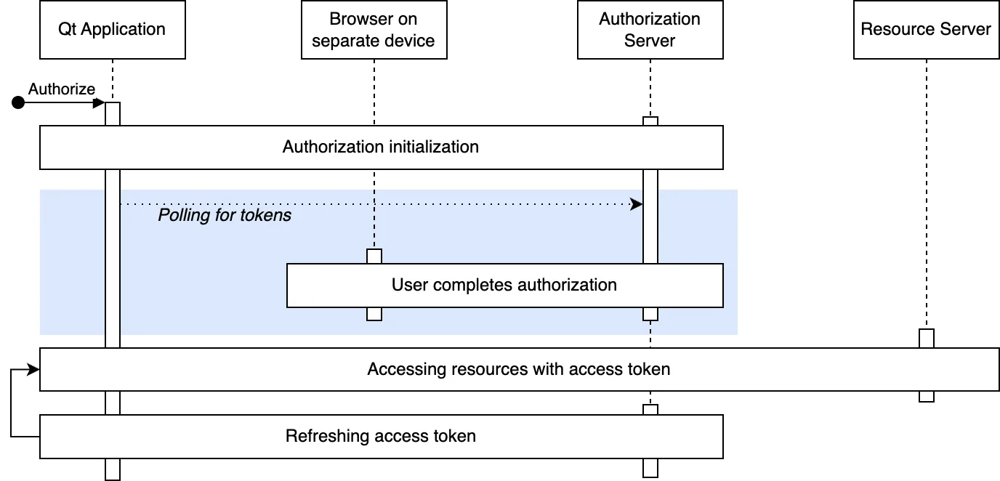
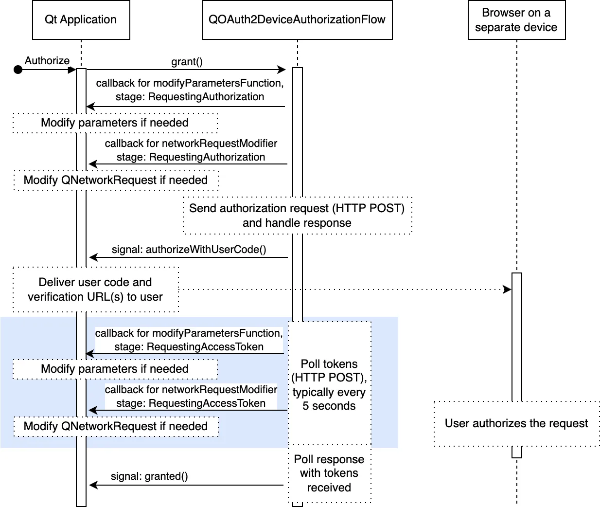
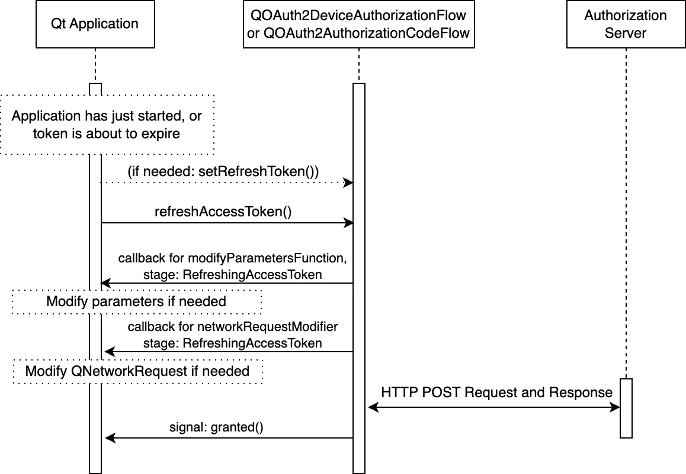

Qt OAuth2 Overview
OAuth2
RFC 6749 OAuth 2.0 defines an authorization framework which enables resource authorization without exposing sensitive user credentials such as passwords.
The OAuth2 framework defines several client types (public and confidential) as well as flows (implicit, authorization code, and several others). For typical Qt applications the client type should be considered as public native application. The public implies that the application isn't trusted to hold secrets, such as passwords, embedded within the shipped binary.
RFC 8252 OAuth 2.0 for Native Apps further defines the best practices for such applications. Among other things, it defines the Authorization Code Flow as the recommended flow, and therefore QtNetworkAuth provides a concrete implementation of this flow.
Since Qt 6.9, QtNetworkAuth also provides support for RFC 8628 OAuth 2.0 Device Authorization Grant. This device flow is intended for connected devices that have limited input capabilities, or where using a user-agent or browser is not practical. Examples of such devices include televisions, media consoles, machine HMIs, and IoT devices.
The following table highlights the main aspects of the two concrete OAuth2 flows supported by QtNetworkAuth module:
| Aspect | Authorization Code Flow | Device Authorization Flow |
|---|---|---|
| Network Connection | Yes | Yes |
| User Interaction | Browser / user-agent on the same device | Browser / user-agent on a different device |
| Redirect Handling Required | Yes | No |
| Input Capability On Device | Rich input capabilities | Limited or no input capability |
| Targets | Desktop and Mobile Apps | TVs, Consoles, HMIs, IoT Devices |
OAuth2 requires using a user-agent which is typically a browser. For further information, see Qt OAuth2 Browser Support.
Qt OAuth2 Classes
QtNetworkAuth provides both concrete and abstract OAuth2 classes. The abstract classes are intended for implementing custom flows, while the concrete classes provide a concrete implementation.
QtNetworkAuth has two abstract classes for implementing OAuth2 flows:
- An OAuth2 flow implementation class provides the main API, and is the orchestrator of the flow. The abstract class is QAbstractOAuth2, and the concrete implementations are QOAuth2AuthorizationCodeFlow and QOAuth2DeviceAuthorizationFlow.
- A Reply handler class which handles redirects and replies from an authorization server. The reply handler abstract class is QAbstractOAuthReplyHandler, and the concrete classes are QOAuthHttpServerReplyHandler and QOAuthUriSchemeReplyHandler. The main difference between reply handlers is what kind of redirects they are designed to handle. QOAuth2AuthorizationCodeFlow relies on having a reply handler to handle the redirects, whereas QOAuth2DeviceAuthorizationFlow, which is not based on redirects, does not use reply handlers.
Authorization Code Flow
The authorization code flow is the recommended OAuth2 flow for native applications like Qt applications.
The following code snippet provides an example setup:
QOAuth2AuthorizationCodeFlow m_oauth; QOAuthUriSchemeReplyHandler m_handler; m_oauth.setAuthorizationUrl(QUrl(authorizationUrl)); m_oauth.setTokenUrl(QUrl(accessTokenUrl)); m_oauth.setClientIdentifier(clientIdentifier); m_oauth.setRequestedScopeTokens({scope}); connect(&m_oauth, &QAbstractOAuth::authorizeWithBrowser, this, &QDesktopServices::openUrl); connect(&m_oauth, &QAbstractOAuth::granted, this, [this]() { // Here we use QNetworkRequestFactory to store the access token m_api.setBearerToken(m_oauth.token().toLatin1()); m_handler.close(); }); m_handler.setRedirectUrl(QUrl{"com.example.myqtapp://oauth2redirect"_L1}); m_oauth.setReplyHandler(&m_handler); // Initiate the authorization if (m_handler.listen()) { m_oauth.grant(); }
Stages
The Authorization Code Flow has two main stages: resource authorization (including any necessary user authentication) followed up by an access token request. These are optionally followed by access token usage and access token refreshing. The following figure illustrates these stages:

- In authorization stage, the user is authenticated, and the user authorizes the access to resources. This requires browser interaction by the user.
- After the authorization the received authorization code is used to request an access token, and optionally a refresh token.
- Once the access token is acquired, the application uses it to access the resources of interest. The access token is included in the resource requests, and it is up to the resource server to verify the token's validity. There are several ways to include the token as part of the requests, but including it in the HTTP
Authorizationheader is arguably the most common. - Access token refreshing. Access tokens typically expire relatively quickly, say in one hour. If the application received a refresh token in addition to the access token, the refresh token can be used to request a new access token. Refresh tokens are long-lived and applications can persist them to avoid the need for a new authorization stage (and thus another browser interaction).
Details and Customization
OAuth2 flows are dynamic and following the details can be tricky at first. The figure below illustrates the main details of a successful authorization code flow.

For clarity the figure omits some less used signals, but altogether illustrates the details and main customization points. The customization points are the various signals/slots the application can catch (and call), as well as the callbacks which are settable with QAbstractOAuth::setModifyParametersFunction() and QAbstractOAuth2::setNetworkRequestModifier().
Choosing A Reply Handler
The decision on which reply hander to use, or to implement, is dependent on the redirect_uri used. The redirect_uri is where the browser is redirected upon concluding the authorization stage.
In the context of native applications, RFC 8252 outlines three main types of URI schemes: loopback, https, and private-use.
- Private-use URIs: Can be used if the OS allows an application to register a custom URI scheme. An attempt to open an URL with such custom scheme will open the related native application. See QOAuthUriSchemeReplyHandler.
- HTTPS URIs: Can be used if the OS allows the application to register a custom HTTPS URL. An attempt to open this URL will open the related native application. This scheme is recommended if the OS supports it. See QOAuthUriSchemeReplyHandler.
- Loopback Interfaces: These are commonly used for desktop applications, and applications during development. The QOAuthHttpServerReplyHandler is designed to handle these URIs by setting up a local server to handle the redirection.
The choice depends on several factors such as:
- Redirect URIs supported by the authorization server vendor. The support varies from vendor to vendor, and is often specific to a particular client type and operating system. Also, the support may vary depending on whether the application is published or not.
- Redirect URI schemes supported by the target platform(s).
- Application-specific usability, security, and other requirements.
RFC 8252 recommends using the
httpsscheme for security and usability advantages over the other methods.
Device Authorization Flow
The Device Authorization Flow is intended for connected devices that are limited in terms of input capabilities, or where user-agent/browser usage is not practical.
The following code snippet provides an example setup:
m_deviceFlow.setAuthorizationUrl(QUrl(authorizationUrl)); m_deviceFlow.setTokenUrl(QUrl(accessTokenUrl)); m_deviceFlow.setRequestedScopeTokens({scope}); m_deviceFlow.setClientIdentifier(clientIdentifier); // The need for a client secret depends on the authorization server m_deviceFlow.setClientIdentifierSharedKey(clientSecret); connect(&m_deviceFlow, &QOAuth2DeviceAuthorizationFlow::authorizeWithUserCode, this, [](const QUrl &verificationUrl, const QString &userCode, const QUrl &completeVerificationUrl) { if (completeVerificationUrl.isValid()) { // If the authorization server provided a complete URL // that already contains the necessary data as part of the URL parameters, // you can choose to use that qDebug() << "Complete verification uri:" << completeVerificationUrl; } else { // Authorization server provided only verification URL; use that qDebug() << "Verification uri and usercode:" << verificationUrl << userCode; } } ); connect(&m_deviceFlow, &QAbstractOAuth::granted, this, [this](){ // Here we use QNetworkRequestFactory to store the access token m_api.setBearerToken(m_deviceFlow.token().toLatin1()); }); m_deviceFlow.grant();
Stages
Device Authorization Flow has three main stages: initializing the authorization, polling for tokens, and completing the authorization. These are optionally followed by token usage and token refreshing. The following figure illustrates these stages:

- Authorization is initialized by sending a HTTP request to the authorization server. The authorization server provides a user code, verification URL(s), and a device code in response.
- After authorization is initialized, user is provided with a user code and verification URL(s) for completing the authorization. Providing the information for the user is use-case specific: it can be a visible URL on the screen, QR code, an email, and so on.
- While waiting for a user to complete the authorization, the device flow polls the authorization server for tokens. The device code received in the previous step is used to match the authorization session. The poll interval is decided by the authorization server, and is typically 5 seconds.
- Once user has accepted (or denied) the authorization, the authorization server responds to a poll request with the requested tokens or an error code (in case of denial), and the authorization is complete.
Details and Customization
The following figure illustrates the flow in more detail. The figure illustrates also the main customization points, which may sometimes be needed (for instance proprietary parameters, or additional authentication credentials).

Refreshing Tokens
A full OAuth2 flow requires user interaction, which can be intrusive to the user experience. To minimize these interactions, tokens can be silently refreshed from user's perspective.
Refreshing tokens requires that the authorization server provide a refresh token during authorization. Providing a refresh token is up to the authorization server: some servers provide it always, some never, and some provide it if a specific scope was present in the authorization request.
The following figure illustrates the token refresh in more detail:

As shown in the figure above, the usual customization points are also available when refreshing tokens.
To refresh the tokens after an application startup, the application needs to persist the refresh token securely, and set it with QAbstractOAuth2::setRefreshToken(). QAbstractOAuth2::refreshTokens() can then be called to request new tokens.
Since Qt 6.9, applications can also use refresh convenience functionality to automatically refresh the tokens - see QAbstractOAuth2::accessTokenAboutToExpire(), QAbstractOAuth2::autoRefresh, and QAbstractOAuth2::refreshLeadTime.
The expiration time for a refresh token is generally not indicated by the authorization server (apart from the server's documentation). Their validity can range from days to months, or longer. Furthermore, as with other tokens, they can be revoked by the user and thus invalidated at any time. Therefore, it is important to properly detect a failed refresh attempt with QAbstractOAuth::requestFailed() or QAbstractOAuth2::serverReportedErrorOccurred().
Qt OpenID Connect Support
OpenID Connect (OIDC) is a simple identity layer on top of OAuth2 protocol. Where authorization provides means to authorize users to perform actions, OIDC enables establishing a trusted identity of a user.
Qt's support for OIDC is at the moment limited to getting ID tokens. An ID token is a JSON Web Token (JWT) that contains claims about the authentication event.
Notably the support for ID token validation or ID token decryption is currently not implemented.
Assuming the application is able to validate the received tokens, the token can be used to establish the identity of the user reliably (to the degree the OIDC provider itself is trusted).
ID tokens are sensitive information and should be kept as a secret. ID tokens are not intended for sending out in API calls - the access token is intended for that purpose. Note that some vendors may use the same JWT format for access tokens, but that is not to be confused with actual ID tokens which incidentally use the same format. With ID tokens the client receiving the token is responsible for verifying the token, whereas with access tokens it's the resource server accepting the token that is responsible for verification.
Getting an ID Token
Getting an ID token is very similar to getting an access token. First we need to set the appropriate scope. Authorization Server vendor may support additional scope specifiers such as profile and email, but all OIDC requests must include openid scope:
m_oauth.setRequestedScopeTokens({"openid"});
For OIDC it is strongly recommended to use nonce parameter. This is done by ensuring that appropriate NonceMode is set.
// This is for illustrative purposes, 'Automatic' is the default mode m_oauth.setNonceMode(QAbstractOAuth2::NonceMode::Automatic);
As last step we can listen for either QAbstractOAuth2::granted signal or the QAbstractOAuth2::idTokenChanged directly:
connect(&m_oauth, &QAbstractOAuth2::idTokenChanged, this, [this](const QString &token) { Q_UNUSED(token); // Handle token });
Validating an ID Token
Validating the received ID Token is a crucial part of the flow, and, when fully implemented, a somewhat complicated task.
At its outline validation consists of these steps
- Decrypting the token if needed (see JWE)
- Extracting the token header, payload, and signature
- Validating the signature
- Validating the fields of the payload (such as
aud, iss, exp, nonce, iat)
Qt currently doesn't provide support for ID token validation, but there are several C++ library options available, such as jwt-cpp.
ID Token Verification Example
This section illustrates a simple verification with the help of jwt-cpp library. As prerequisites, the development environment needs to have OpenSSL libraries, and jwt-cpp include folder under the application project's source directory.
In application project's CMakeLists.txt we first check that the prerequisities are met:
find_package(OpenSSL 1.0.0 QUIET)
set(JWT_CPP_INCLUDE_DIR "${CMAKE_SOURCE_DIR}/include")
if(OPENSSL_FOUND AND EXISTS "${JWT_CPP_INCLUDE_DIR}/jwt-cpp/jwt.h")
Then we add necessary includes and libraries:
target_include_directories(networkauth_oauth_snippets PRIVATE "${JWT_CPP_INCLUDE_DIR}")
target_link_libraries(networkauth_oauth_snippets PRIVATE OpenSSL::SSL OpenSSL::Crypto)
target_compile_definitions(networkauth_oauth_snippets PRIVATE JWT_CPP_AVAILABLE)
In the application source files, include the verification library:
#ifdef JWT_CPP_AVAILABLE #include "jwt-cpp/jwt.h" #endif
Once the application receives an ID token, it's time to verify it. First we find a matching key from JSON Web Key Sets (JWKS, see OpenID Connect Discovery).
try { const auto jwt = jwt::decode(m_oauth.idToken().toStdString()); const auto jwks = jwt::parse_jwks(m_jwks->toJson(QJsonDocument::Compact).toStdString()); const auto jwk = jwks.get_jwk(jwt.get_key_id());
And then we do the actual verification:
// Here we use modulus and exponent to derive the key const auto n = jwk.get_jwk_claim("n").as_string(); // modulus const auto e = jwk.get_jwk_claim("e").as_string(); // exponent if (n.empty() || e.empty()) { qWarning() << "Modulus or exponent empty"; return false; } if (jwt.get_algorithm() != "RS256") { // This example only supports RS256 qWarning() << "Unsupported algorithm:" << jwt.get_algorithm(); return false; } if (jwk.get_jwk_claim("kty").as_string() != "RSA") { qWarning() << "Unsupported key type:" << jwk.get_jwk_claim("kty").as_string(); return false; } if (jwk.has_jwk_claim("use") && jwk.get_jwk_claim("use").as_string() != "sig") { qWarning() << "Key not for signature" << jwk.get_jwk_claim("use").as_string(); return false; } // Simple minimal verification (omits special cases and eg. 'sub' verification). // jwt-cpp does check also 'exp', 'iat', and 'nbf' if they are present. const auto keyPEM = jwt::helper::create_public_key_from_rsa_components(n, e); auto verifier = jwt::verify() .allow_algorithm(jwt::algorithm::rs256(keyPEM)) .with_claim("nonce", jwt::claim(m_oauth.nonce().toStdString())) .with_issuer(m_oidcConfig->value("issuer"_L1).toString().toStdString()) .with_audience(std::string(clientIdentifier.data())) .leeway(60UL); verifier.verify(jwt); qDebug() << "ID Token verified successfully"; return true; } catch(const std::exception &e) { // Handle error. Alternatively pass error parameter to jwt-cpp calls qWarning() << "ID Token verification failed" << e.what(); return false; }
It is recommended to check up-to-date documentation and examples of the library being used, and also to familiarize with ID token verification.
Reading ID Token Values
The ID token is in JSON Web Token (JWT) format and consists of a header, payload, and signature parts, separated by dots {'.'}.
Reading the values of the ID token is straightforward. As an example, assuming a struct:
struct IDToken { QJsonObject header; QJsonObject payload; QByteArray signature; };
And a function:
std::optional<IDToken> parseIDToken(const QString &token) const;
The token can be extracted:
if (token.isEmpty()) return std::nullopt; QList<QByteArray> parts = token.toLatin1().split('.'); if (parts.size() != 3) return std::nullopt; QJsonParseError parsing; QJsonDocument header = QJsonDocument::fromJson( QByteArray::fromBase64(parts.at(0), QByteArray::Base64UrlEncoding), &parsing); if (parsing.error != QJsonParseError::NoError || !header.isObject()) return std::nullopt; QJsonDocument payload = QJsonDocument::fromJson( QByteArray::fromBase64(parts.at(1), QByteArray::Base64UrlEncoding), &parsing); if (parsing.error != QJsonParseError::NoError || !payload.isObject()) return std::nullopt; QByteArray signature = QByteArray::fromBase64(parts.at(2), QByteArray::Base64UrlEncoding); return IDToken{header.object(), payload.object(), signature};
In more rare cases the token may be encrypted with JSON Web Encryption (JWE), which internally contains a JWT token. In this case the token must be decrypted first.
OpenID Connect Discovery
OpenID Connect Discovery defines means to discover needed OpenID provider details, in order to interact with it. This includes things such as authorization_endpoint and token_endpoint URLs.
While these provider details can be statically configured in the application, discovering the details at runtime may provide more flexibility and robustness in interacting with various providers.
Getting the discovery document is a simple HTTP GET request. The document is typically located in https://<the-domain eg. example.com>/.well-known/openid_configuration
m_network->get(request, this, [this](QRestReply &reply) { if (reply.isSuccess()) { if (auto doc = reply.readJson(); doc && doc->isObject()) m_oidcConfig = doc->object(); // Store the configuration } });
Notably, for token validation, the jwks_uri field provides a link for accessing the current (public) security credentials. Using that removes the need to hardcode such credentials in the application directly. This also helps with key rotation; the vendors may change the used keys from time to time, and therefore ensuring an up-to-date key is important.
Getting the keys is similarly a simple HTTP GET request:
m_network->get(request, this, [this](QRestReply &reply) { if (reply.isSuccess()) { if (auto doc = reply.readJson(); doc && doc->isObject()) m_jwks = doc; // Use the keys later to verify tokens } });
The key set typically contains several keys. The correct key is indicated in the JWT header (care must be taken to match the keys properly, just checking the key id (kid) field is not adequate).
OpenID UserInfo Endpoint
An alternative way to access user information is to use OpenID UserInfo Endpoint, if the OIDC provider supports it. The URL for the userinfo is in userinfo_endpoint field of the OpenID Connect Discovery document.
The userinfo endpoint does not use the ID token, but is accessed with the access token. Accessing the userinfo is similar to accessing any other resource with an access token.
Assuming the access token is received and set for example by:
QNetworkRequestFactory userInfoApi(url); userInfoApi.setBearerToken(m_oauth.token().toLatin1());
Then accessing the userinfo is a HTTP GET request:
m_network->get(userInfoApi.createRequest(), this, [this](QRestReply &reply) { if (reply.isSuccess()) { if (auto doc = reply.readJson(); doc && doc->isObject()) qDebug() << doc->object(); // Use the userinfo } });